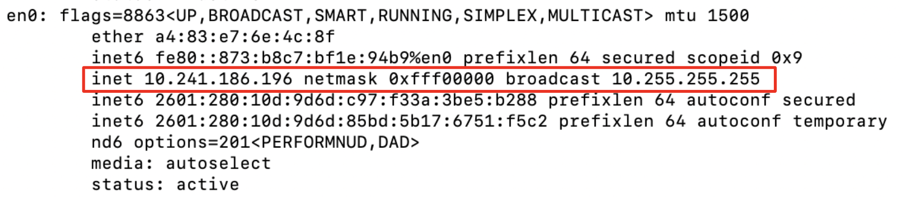
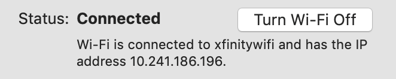
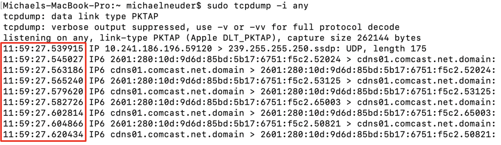
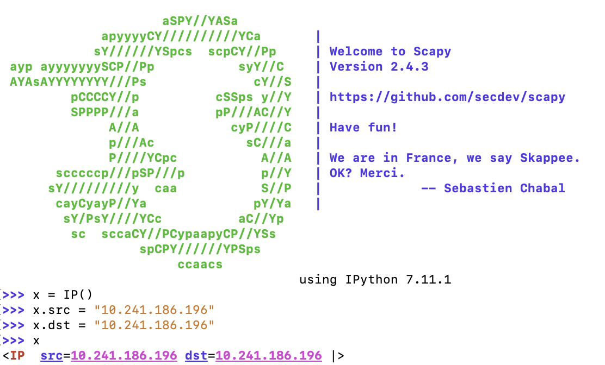
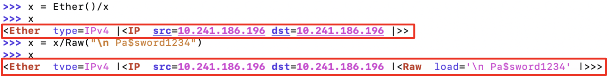
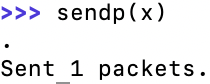
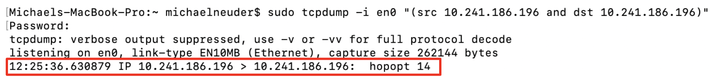
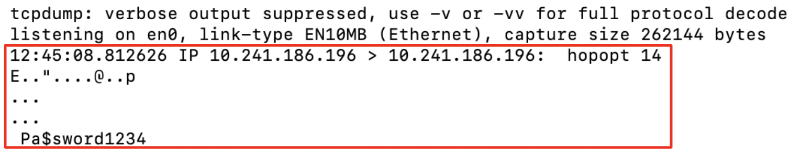
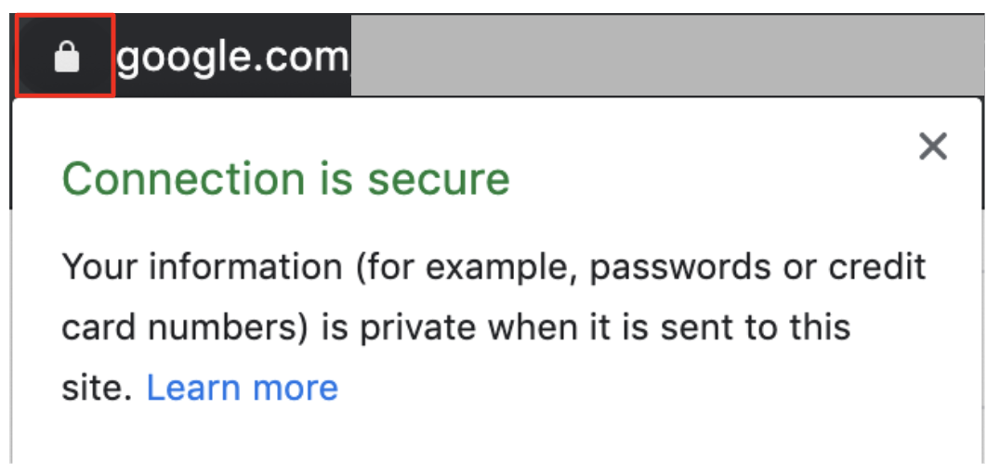

Internet Protocol Suite and Basic Packet Construction
This post is the first of a series I plan on writing in the coming weeks about network programming. As this is a new area to me, I am starting from the very beginning and hope that it will be easy to follow as we build understanding. Today I want to talk about the basics of the internet and do a demo on how packets can be constructed and sent using Scapy. This was one of the resources sent to me by my future manager Chen-Han Ho as I prepare to join his networking team with Google this summer.
Internet Basics
I will only discuss how the internet works with enough detail to understand the point of the demo. There are many better resources to read about how the web works in more detail, and for a really good overview see Steven Li’s article. As described in that article the internet is “routers moving packets according to various protocols.” Routers are just computers that forward information between each other and this data is broken into small chunks called packets. The main advantage of a packet switched network is that a channel can be occupied simultaneously by many data streams instead of being only used by one connection at a time.
The protocols we will be considering today are part of the Internet Protocol Suite and particularly the TCP/IP model. The model describes four layers of network communication. At the lowest level is the link layer, which is the hardware specification for how computers send information (e.g. ethernet, wifi, bluetooth). The second layer is called the internet layer, and is responsible for sending packets from origin to destination based on the Internet Protocol (IP) and IP addresses. The third layer is called the transport layer, and handles IP packets with extra support. For example, in the case of TCP, the packets are guaranteed to be delivered and the protocol is responsible for ensuring this by asking for missing packets and making sure they are in the correct order. At the highest level is the application layer, which handles processing the contents of the packets and using the information received.
Ok, now that we have the conceptual model of the networking protocols, we can look at a demo.
Listening for packets
Before we can start sending packets we need to set up a process to listen to the network so we can see our packets moving. The first step is figuring out which network interface to listen to. We can do this with the command ifconfig in the terminal. The output will show many interfaces, but what we are looking for is en0, which is the default for wifi connections. The image below shows this section of the output when run on my machine.

We can tell that this is the wifi connection we are looking for because it provides the IP address (following inet in the red box) in IPv4 form as 10.241.186.196 and also gives a network mask to use. On macOS, we can check that this is indeed the IP address of our machine in the network section of the system preferences as shown below.

Now we have the interface to listen to and the IP address of our machine which we will send packets from. We can use this information along with the command line tool tcpdump. From the man page of tcpdump we get the following description, “Tcpdump prints out a description of the contents of packets on a network interface that match the boolean expression.” So no we just need to specify the constraints of the packets which we want to hear. The most basic from of the command we can run is:
sudo tcpdump -i any
The i flag specifies the interface to listen to. When I run this on my machine I immediately get lots of packets coming in and being processed. The image below shows a portion of the output from my terminal (note I had to run this with sudo in order to have permission to listen to any interface).

The red box shows the timestamps of the packets being received, which demonstrates how fast these packets are coming in. They all were processed at 11:59am and between 27.5 and 27.7 seconds. So this content all was bouncing back and forth within 0.2 seconds! But this is too many packets to sort through when we want to see if our custom made packets get sent. So instead we will listen to the network with the following command.
sudo tcpdump -i en0 "(src 10.241.186.196 and dst 10.241.186.196)"
So now we are specifying the interface we want to listen to as en0 which is what we figured out above. Additionally, we only want to hear packets that are from our IP address and directed back to our machine. To do this we set the source (src) and destination (dst) accordingly. Now we are all set to listen to the network for our custom packets and can use Scapy to construct and send some simple packets.
Constructing packets
Scapy can be used in an interactive mode or as a module in a python script. I will use the interactive mode because it is very convenient and intuitive, but for more complicated packets it probably makes sense to write scripts. Scapy can be installed using pip3:
pip3 install scapy
Now running the command sudo scapy from the terminal should open up the interactive mode. Note that sudo is necessary to send packets. The image below shows the initial welcome screen and the simple IP packet that I created.

First, I create an instance of an IP packet and set the src and dst attributes to my IP address. The last line shows the contents of our packet so far. Now, this is an IP packet and we are going to send it over the link layer, so we need to wrap our IP packet in an Ethernet packet. Additionally, we want to add some raw data to the packet as a payload. The following does both of these.

One of the really easy syntax features of this library is simply using / to compose packets. So the command
x = Ether()/x
wraps our current value of x (the basic IP packet), in an ethernet packet and stores it back in x. This is shown in the first red box above. The next command wraps a fake password inside the IP packet as the payload with the command:
x = x/Raw("\n Pa$sword1234")
The second red box shows the final form of the packet: An ethernet packet containing an IP packet with src and dst set as well as a payload of Pa$sword1234. Now we can simply send the packets over the link layer with sendp(x).

Locating packets
Now we can go back to our process that was listening for packets from our IP address to our IP address.

We can see that at 12:25 a packet was processed from our tcpdump process with the correct source and destination. Great! We now want to check what the contents of that packet are. By adding the -A flag to our tcpdump call we can get the output of the packet in ASCII.

The packet and contents are shown in the red box above. We can see that the plaintext fake password is now readable just by parsing the packet that we heard over the public network. Almost all data transmitted over TCP/IP is encrypted (curious about encryption? see my Public Key Cryptography post) using TLS (Transport Security Layer), so this type of packet sniffing won’t usually expose user passwords and other sensitive information. You can tell if your connection is being secured by TLS encryption if the webpage name is prefixed with https or the lock symbol is seen in the search bar.

The red box above shows where to look for the lock and demonstrates that my connection with Google servers was encrypted. Overall, I hope this emphasizes how important it is to make sure the websites you are sharing personal information with are properly secured.
Thanks for reading, I had a blast coming up with this demo. As always, please feel free to reach out with questions/comments/corrections!
Stay healthy.
Mike